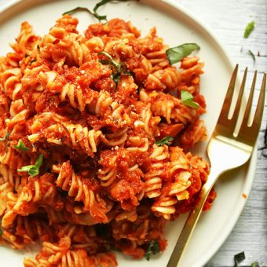

Red Pasta

Spicy Red Lentil Pasta
Simple, 30-minute spicy red pasta sauce with red lentils for added protein and fiber. Serve over gluten-free pasta for a delicious and hearty plant-based meal.
Ingredients
- olive oil
- garlic
- tomatoes
- carrots
- red lentils
Steps
- Add lentils and water to a small saucepan and bring to a low boil over medium heat, then reduce heat slightly to achieve a mild simmer (not boil).
- Cook lentils to preferred doneness - 15 minutes for a slight bite, 20-22 minutes for more tender lentils. For this dish, I prefer 'al dente' so they don't become mushy.
- When lentils are finished cooking, drain off any excess cooking liquid, season with a pinch of salt, and set aside
- While lentils are cooking, heat a large, rimmed metal or cast iron skillet over medium heat. Once hot, add olive oil, garlic, carrots and tomato (optional). Sauté for 3 minutes, stirring frequently